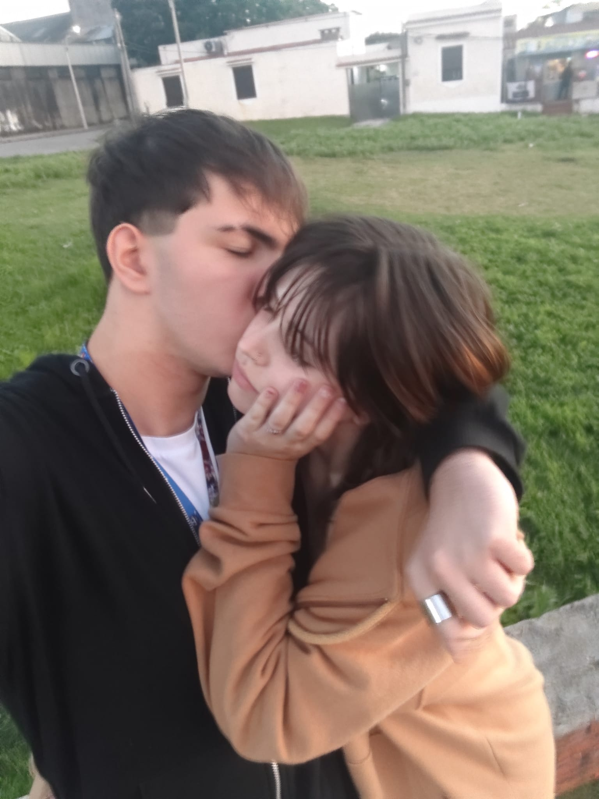
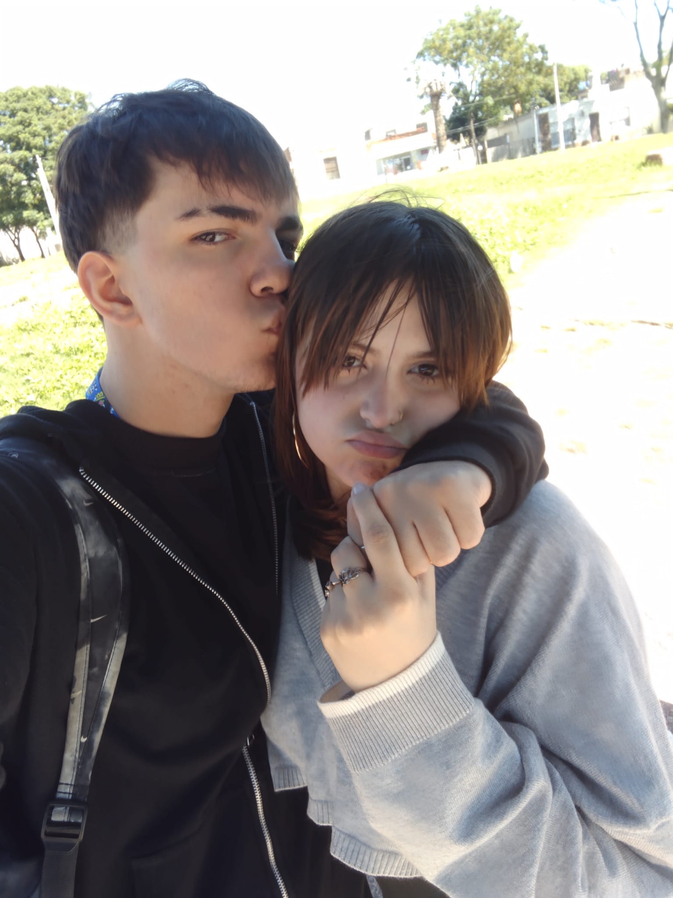

.side-img{ width:100px; /* más chico */ height:auto; border-radius:10px; opacity:0.9; object-fit:cover; }
Puntaje: 0

.side-img{ width:80px; height:auto; border-radius:10px; opacity:0.9; object-fit:cover; }